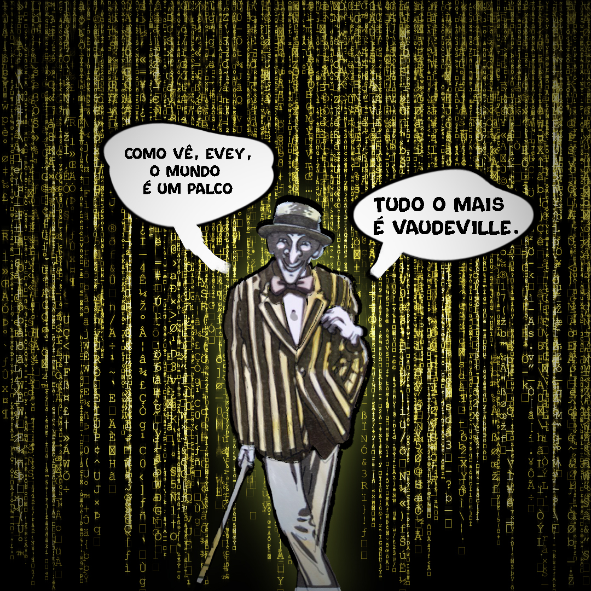

Tudo o mais é vaudeville
Você já leu V de Vingança? Caso não, considere a possibilidade. Te fará bem.
Essa citação e o próprio personagem que você vê na imagem acima vem dessa obra de arte escrita por Alan Moore, o bruxão das HQ's A fala do personagem carrega mais do que uma citação de efeito. Ela é uma referência de grande profundidade e estranhamente conversa com nosso tempo atual. Agora, se ele previu o futuro ou se de certa forma sempre fomos assim é outra questão. A primeira questão é clara: o mundo virou (ou sempre foi) espetáculo. Mas o que significa vaudeville, e por que Moore escolheu essa palavra?
No final do século XIX, nos Estados Unidos, o vaudeville foi um tipo de entretenimento popular que reunia música, dança, números de mágica, piadas e pequenos esquetes cômicos. Tudo apresentado em sequência, com ritmo rápido e duração curta. O objetivo não era ensinar, provocar ou transformar. Era entreter. Nada mais.
Era uma espécie de fast-food teatral. Espetáculo acessível, direto ao ponto, leve. Superficial, por necessidade. E justamente por isso, incrivelmente popular. Bastava que cada número mantivesse o público atento por mais alguns minutos antes do próximo. Era uma linha de montagem cultural.
Isso moldou o DNA da indústria do entretenimento ocidental: Hollywood, televisão, publicidade, tudo passou a funcionar como uma sucessão de estímulos curtos que brigam pela atenção. Alan Moore sabe disso. “O mundo é um palco”: sim, tudo é encenação. Mas tudo o mais é vaudeville — ou seja, o que está fora da revolução (ou da ilusão dela) virou espetáculo automático, barato, repetido, descartável. Um mundo onde todo gesto já vem com trilha sonora e filtros prontos.
Moore talvez esteja falando da mídia. Da política. Ou da vida cotidiana mesmo — transformada num eterno palco onde cada um performa sua versão de si, com os olhos treinados para o aplauso invisível. E o mais desconcertante é que ele está certo antes da internet. Antes do feed. Antes dos cortes. Antes dos vídeos de 20 segundos com fundo de lo-fi e legendas amarelas que explicam tudo sem dizer nada. Hoje, o vaudeville voltou. E voltou com força. Só que agora ele está no seu bolso, tocando sozinho, com rolagem infinita.
Talvez a frase mais honesta seja mesmo essa: tanto faz. Porque, no fim das contas, até a crítica já faz parte do show. A máscara do V virou filtro de Instagram. A revolução virou skin de marketing. A denúncia virou conteúdo. E o conteúdo virou vaudeville. O vaudeville renasce. E o público? Nunca saiu da plateia.